1 R 導入
1.1 プログラミングとは
- プログラミングとは、意図した計算を行うためコンピューターに指示を出すことです。そもそもコンピューターは「計算を行う」「計算結果を記憶する」という2つの基本機能を持っています。
- プログラミング言語とは、コンピュータに指示を出すために使われる共通言語です。Java、 Python、 Ruby、 C++、 PHP、 JavaScript などがあり、それぞれ独自の構文（Syntax）、文法、制御構造を持っています。
- 言語によって得意とする分野や用途が異なり、スマートフォンアプリ、ゲーム、Web システムなど、現代社会のあらゆるインフラがこれらの言語によって動いています。
参考：15種類のプログラミング言語を難易度や職業別に徹底解説（プロ検）
プログラミングと聞くと身構えてしまうかもしれませんが、R は「世界中の知恵（パッケージ）を借りて計算する、最高に便利な計算機」です。まずはエラーを恐れず、キーボードを叩くことから始めていきましょう！
1.2 Rとは
皆さんがこれから学ぶ R は、統計解析やデータの可視化（グラフ作成）に特化したプログラミング言語であり、オープンソース（無償公開）の計算環境です。世界中の研究者やデータサイエンティストに愛用されており、以下のような高度な特徴を備えています。
データの操作（Data Manipulation）
Excel等で保存されている煩雑なデータを、ルールに基づいて一瞬で集計・加工する。
グラフィックス
論文やレポートにそのまま採用できる、出版クオリティの高品質な図表を作成する。
統計的モデリング
単純な平均の比較から、経済現象の要因分析（回帰分析）、機械学習を用いた予測まで幅広く対応する。
パッケージ（Packages）による拡張性
世界中の統計学者が開発・公開している「パッケージ」を追加することで、最新の分析手法を即座に利用できる。
1.3 R を使う理由
実務で多用される Excel も非常に優秀なツールですが、学術研究や高度なデータ分析において R には圧倒的な優位性があります。
再現性（Reproducibility）
「どのボタンをどうクリックしたか」という記憶に頼る操作ではなく、「どのような命令（コード）を書いたか」が記録に残るため、第三者が全く同じ分析結果を 100% 再現できます。
ベクトル演算
R は「ベクトル（数値の列）」をひとかたまりとして一括処理することに最適化されており、大規模なデータセットに対しても計算ミスなく高速に処理を行うことが可能です。
1.4 R と RStudio
Rを効率的に使いこなすために欠かせないのが RStudio です。これらは「エンジン」と「運転席」の関係に例えられます。
R（エンジン）
実際に計算処理を行う本体です。
RStudio（運転席 / IDE）
Rを操作しやすくするための統合開発環境（IDE: Integrated Development Environment）です。
RStudio を使用することで、様々な作業を一つの画面で完結させることができます。
1.5 RStudio の起動
画面左下のウィンドウズマークを押してRStudioを起動する。
その際、R本体（R 4.5.1）と間違えないように。
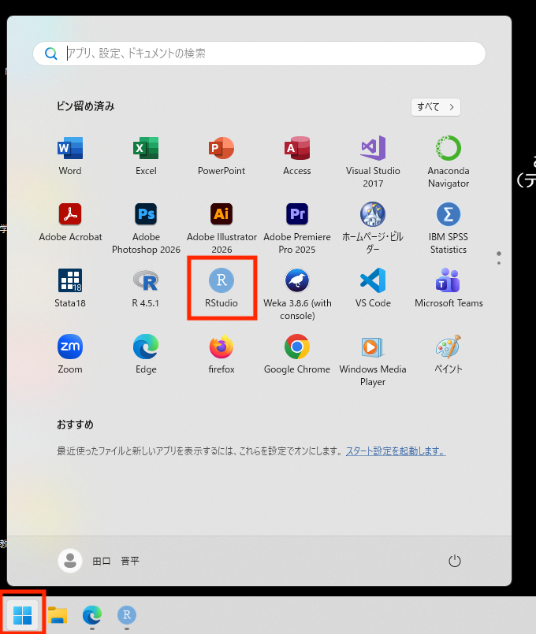
以下のように RStudio が起動したことを確認してください。
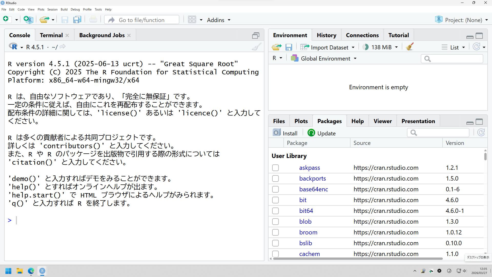
上記は起動時の画面構成です。
ここで、左上のプラスマークから「R Script」を選択します。
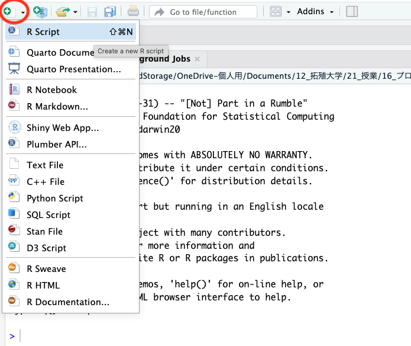
新しいR Scriptが作成され、画面が4つに分割されます。
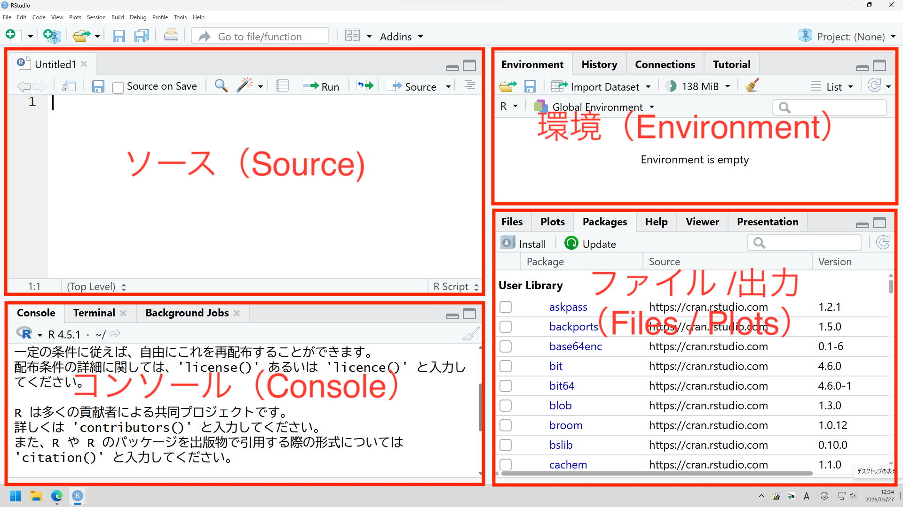
これがRStudioで作業（分析）する時の通常の画面構成です。そして、RStudioの画面を構成する4つの領域のことを、一般的に「ペイン（Pane）」と呼びます。
それぞれの役割を簡単に確認しておきましょう。
ソース（Source） ノート・メモ
プログラム（スクリプト）を記述・保存する。何度も実行したい命令を蓄積します。
コンソール（Console） 計算機・実行窓
命令を実行し、その結果をリアルタイムで確認する。
環境（Environment） 物置・データ管理
読み込んだデータセットや変数の状態を一覧する。
出力/出力（Files/Plots） 本棚・掲示板
作成したグラフを表示したり、関数の使い方（ドキュメント）を参照したりする。
左上の「ソース・ペイン」が最小化されている場合があります。その場合は、他のペインとの境界線をマウスでドラッグして広げるか、右上の四角いアイコンを押して広げてください。
1.6 作業環境の構築
大学のパソコンはシャットダウンするたびに初期化されるため、作業（分析）したファイルは初期化されない場所に保存する必要があります。
拓殖大学では「Kドライブ」と呼ばれるドライブ（保存領域）が、各学生に割り当てられています。シャットダウンしても初期化されることはなく、大学内のどのパソコンからでもアクセスすることができます。
本授業では、この「Kドライブ」に作業（分析）記録を残します。
デスクトップ左上のPCから、Kドライブを開きます。
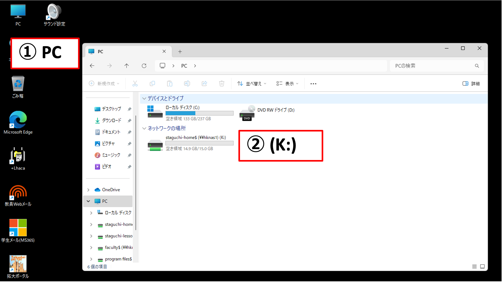
以下のように、フォルダのアドレスが（K:）となっいてることを確認してください。
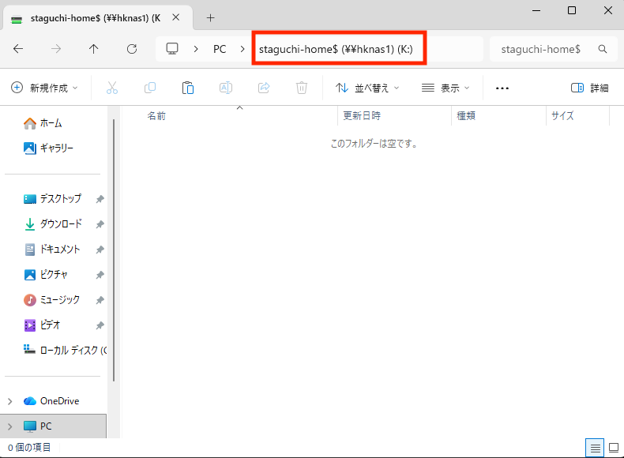
Kドライブを開いている状態で、「新規作成」から「フォルダ」を選び、新規フォルダを作成します。

作成したフォルダの名前を「R_programming」に変更します。
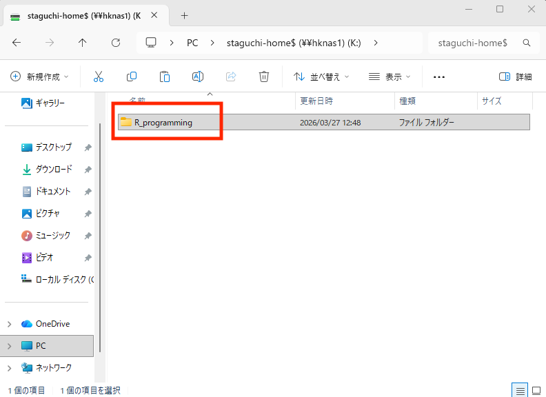
今後は、この「R_programming」フォルダの中に本授業で使うファイルやデータを保存します。
1.7 作業ディレクトリ
R でデータ分析を行う際、コンピュータが「今、どこのフォルダを標準の作業場所にしているか」が非常に重要です。これを 「作業ディレクトリ（Working Directory）」 と呼びます。
なぜ重要か？
分析したいデータ（ExcelやCSV）を読み込むとき、R がそのファイルを探しに行く「基準点」になるからです。基準点がずれていると、「ファイルが見つかりません」というエラーが出てしまいます。
作業ディレクトリの確認方法
RStudioの右下にある [Files] タブを見てください。そこに表示されているフォルダが、現在 R が見ている場所です。
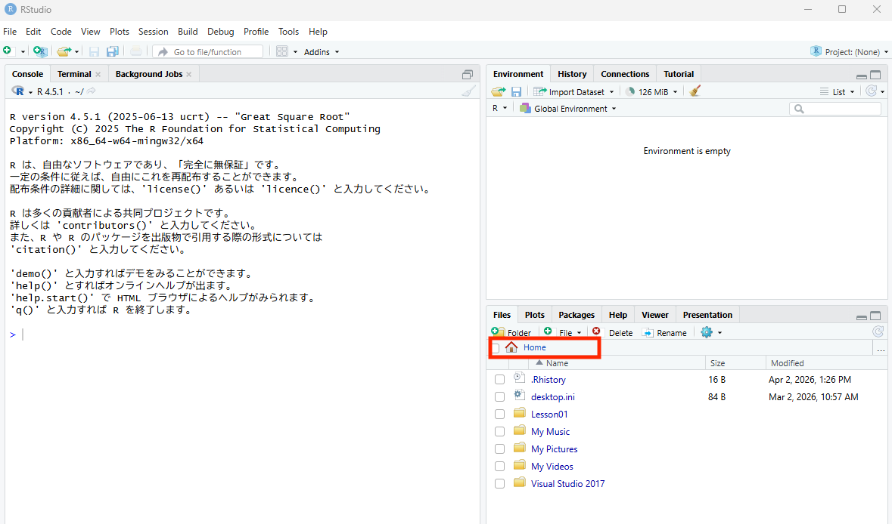
また、コンソール（Console）にgetwd() と入力し実行することでも現在の作業ディレクトリが分かります。
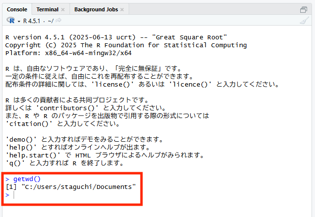
作業ディレクトリの設定方法
手動で場所を指定したい場合は、主に以下の2つの方法があります。
マウス操作で設定する
- RStudioの上部メニューから [Session] をクリック。
- [Set Working Directory] ＞ [Choose Directory…] を選択。
- 作業したいフォルダ（例：Kドライブ内のフォルダ）を選択して [Open] を押す。
コマンドで設定する
setwd("K:/R_programming")という関数を使います。
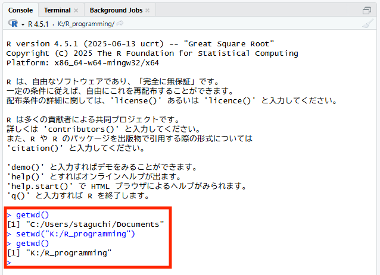
1.8 プロジェクトの活用
大学の演習用PC（Kドライブ）など、決まった場所で作業を続ける場合、毎回「作業場所」を指定するのは面倒です。そこで便利なのが 「Rプロジェクト（.Rproj）」 という機能です。
Rプロジェクトを使うメリット
自動で作業場所が決まる
プロジェクトを開くだけで、そのフォルダが自動的に作業ディレクトリに設定されます。
前回の続きから再開
開いていたファイルや設定が保存され、次回スムーズに始められます。
ファイル迷子を防ぐ
「この授業のデータはこのフォルダ」という箱（プロジェクト）を最初に作ることで、必要なファイルを一括して格納し管理できます。
1.9 プロジェクトの作成
本授業では、第1回から第13回までの授業ごとにプロジェクトを作成します。毎回の授業開始時、以下の手順でその日の授業で使うプロジェクトを準備してください。
- 左下のウィンドウズマークからRStudioを立ち上げる。
- 左上のアイコン（＋R）から新規Rプロジェクトを作成する。
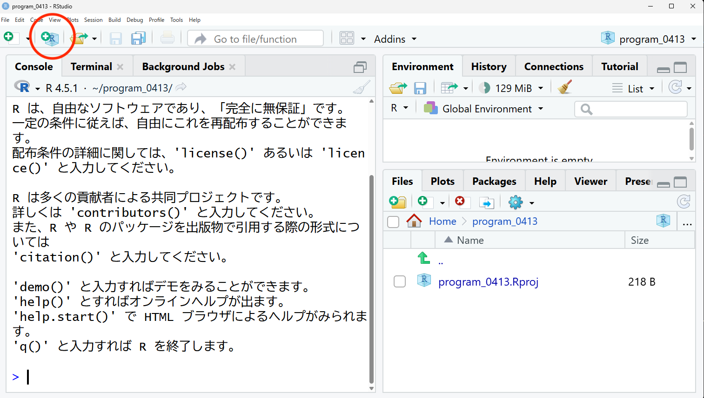
- New Directory を選択する。これにより、新しくフォルダが作成される。（既にあるフォルダをプロジェクトフォルダとして使う場合には Existing Directory を選んでください。）
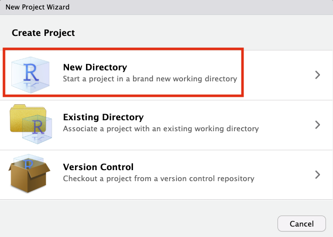
- R New Project を選択する。
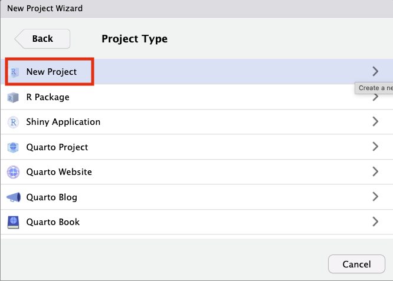
- Directory name に「Lesson01」と入力、Browse ボタンから、Kドライブに作成した「R_programming」を選択し、Create Project を押す。
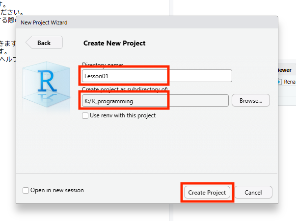
RStudio で、右上のプロジェクト名を確認する。
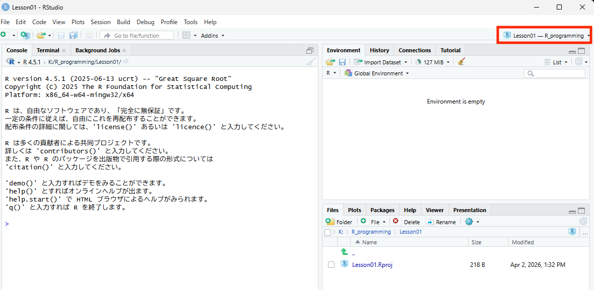
この時、R_programming フォルダの中に、Lesson01 というフォルダ（ディレクトリ）が新しく作成されています。
作業を中断し（一度RStudioを閉じ）た後、再開する際には、Lesson01 フォルダの中の Lesson01.Rproj ファイルをダブルクリックするだけで、一瞬で中断した時の状況に復元できます。
第1回目の授業で必要なデータなどのファイルは全てこの Lesson01 フォルダの中に入れておくことで、R は迷うことなく必要なファイルを見つけられるようになります。
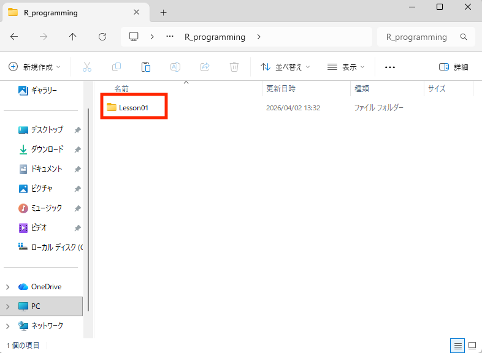
1.10 R スクリプト
左上のプラス（＋）マークから、R Scriptを選択し、新規 R Script を作成します。
なぜコンソールに直接打たないのか？
下の「コンソール」に命令を打ち込んでも計算はできますが、エンターキーを押した瞬間に命令は消えてしまい、後から修正したり、明日同じ計算をやり直したりすることができません。
コンソール: 使い捨ての計算機（やり直しが効かない）
R Script: 記録に残るノート（保存して、何度でも再現できる）
大学のレポートや分析では、必ずこの R Script に命令を書き溜めて保存する習慣をつけましょう。
スクリプトの実行方法
R Scriptに書いた命令を実際にRに計算させるには、以下のショートカットキー、または画面右上のボタンを使用します。
| 実行の範囲 | Windows | Mac | 対応ボタン |
|---|---|---|---|
| 現在の1行 （または選択範囲） |
Ctrl + Enter | Cmd + Return | Run |
| 最初から現在の行まで | Ctrl + Alt + B | Cmd + Opt + B | |
| 現在の行から最後まで | Ctrl + Alt + E | Cmd + Opt + E | |
| ファイル全体 （全行実行） |
Ctrl + Shift + S | Cmd + Shift + S | Source |
ショートカットの最後の一文字は、英単語の頭文字になっています。
- B：Beginning（最初）から現在の行まで実行
- E：End（最後）まで実行
ボタンの使い分け
- Run： 「いま書いたこの1行、ちゃんと動くかな？」と一歩ずつ確認しながら進めるときに使います。実行したコードが下のコンソールにも表示されるので、試行錯誤に最適です。
- Source： 「よし、最後まで書き上げたぞ！最初から一気に自動演奏させてみよう」というときに使います。コンソールが汚れず、最終的な結果だけをスマートに確認できます。
スクリプトを保存する
作成した R Script は、必ず名前をつけて保存しましょう。
- [File] ＞ [Save]（または Ctrl + S）
- 保存ボタンを押す
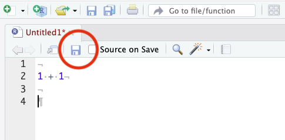
- 名前を practice01 などとする。
- ファイル名には全角文字（日本語）やスペースを使わず、英数字とアンダースコア（_）のみを使うのがプログラミングの鉄則です。
- 今日作成したプロジェクトフォルダ（Lesson01 など）の中に入っていることを確認する。
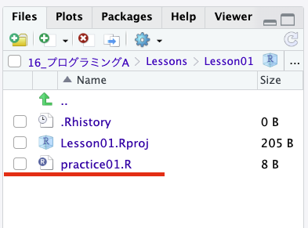
右下の「Files」に表示されているファイルの内容は実際のフォルダに保存されているファイルの内容と一致しています。
1.11 R コードを書いてみよう
RStudioの準備ができたら、実際にRに計算をさせてみましょう。まずは「Rスクリプト」に以下のコードを書き込み、1行ずつ Ctrl + Enter で実行して結果を確認してください。
計算機として使う
Rでは、一般的な数学の計算ができます。
1 + 1
10 - 3
5 × 4
10 ÷ 2
2の3乗
変数（データに名前をつけて保存する）
プログラミングで最も重要なのが 「変数（Variable）」 です。数値に名前をつけて「物置（Environmentペイン）」に保存しておくことができます。 Rでは、<-（矢印のような記号）を使って代入します。
x という名前（変数）に 10 を保存（代入）する。
y という名前（変数）に 5 を保存（代入）する。
名前（変数）を使い、x と y を足す。
関数（複雑な計算を一瞬で行う）
統計解析で欠かせないのが 「関数（Function）」 です。関数とは、特定の計算（平均を出す、グラフを描くなど）を自動で行ってくれる「魔法の箱」のようなものです。
ここでは、複数の数値をまとめた「ベクトル（数値の列）」の平均値を求めてみましょう。
c() という関数を使い、5人のテスト点数（70点、85点、90点、65点、80点）を「score」という名前に保存する。
5人の合計値を計算する。
5人の平均値を計算する。
プログラミングの世界では、「全角」は大敵です。 数字、コンマ、カッコ、スペースがすべて「半角」になっているか、もう一度確認してみましょう。
1.12 Quarto（クゥオート）
これまでは、Rを使って計算する方法を学びました。しかし、実際のレポートや論文では、計算結果（数字やグラフ）だけでなく、その背景を説明する「文章」も必要です。
Quarto は、「文章」と「プログラム」と「実行結果」を一つのファイルに同居させ、そのまま提出用のレポート（HTMLやPDF）として出力できる非常に強力なツールです。
なぜ Quarto を使うのか？
コピペミスがゼロになる
計算結果をExcelやWordにコピペする手間がありません。プログラムが走れば、結果は自動的にレポートに反映されます。
「動く」ことが証明できる
提出されたHTMLを見れば、プログラムが正しく動いたことを一目で確認できます。
一生モノのスキル
現在、データサイエンスの現場では、このような「再現可能なレポート作成（Reproducible Reporting）」が世界標準になっています。
Quarto の仕組み
ここで、Blackboard から assignment01 というファイルをダウンロードし、K ドライブに先ほど作成した Lesson01 フォルダに格納してください。次に、RStudio 右下の Files から assignment01.qmd をクリックして開いてください。
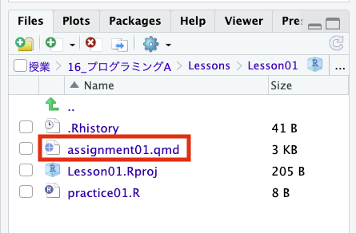
Quartoのファイル（拡張子 .qmd）は、いわば「分析の記録ノート」です。ファイルの中で R を実行し、その前後に説明を記入します。
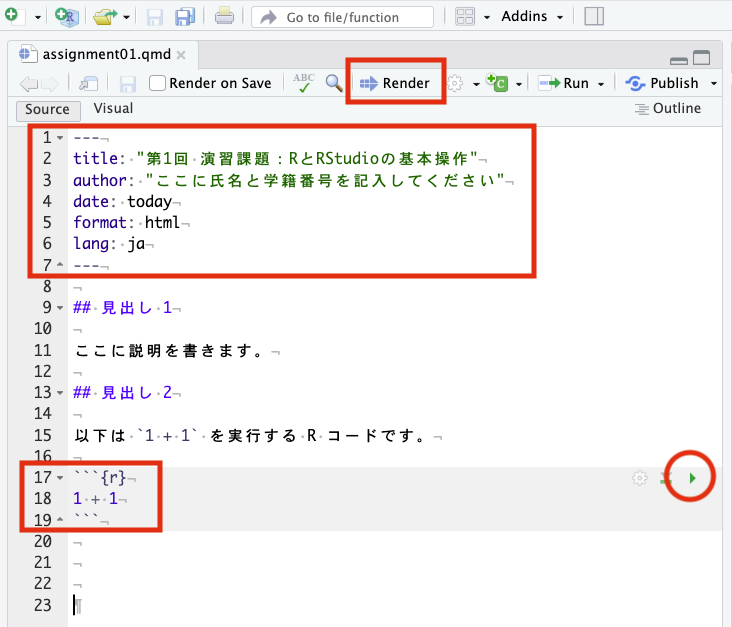
冒頭（一番上）には、そのファイルの属性を決める定型フォーマットを、--- と --- で上下に囲み記入します。
R コードは、```{r} と ``` で上下から囲みます。この記号の間に囲まれた灰色の範囲をR コード・チャンク と呼び、通常のR スクリプトと同じようにコードを書きます。チャンク右上の「緑色の再生ボタン（▶）」を押すと、その場ですぐに実行結果を確認できます。
Render（レンダリング）ボタンを押すと、RStudio が記載内容を上から順に実行し、コードの実行結果（グラフなど）が埋め込まれた Web ページ形式のレポートが作られます。
次図の赤丸されているアイコンを押すとブラウザで表示されます。
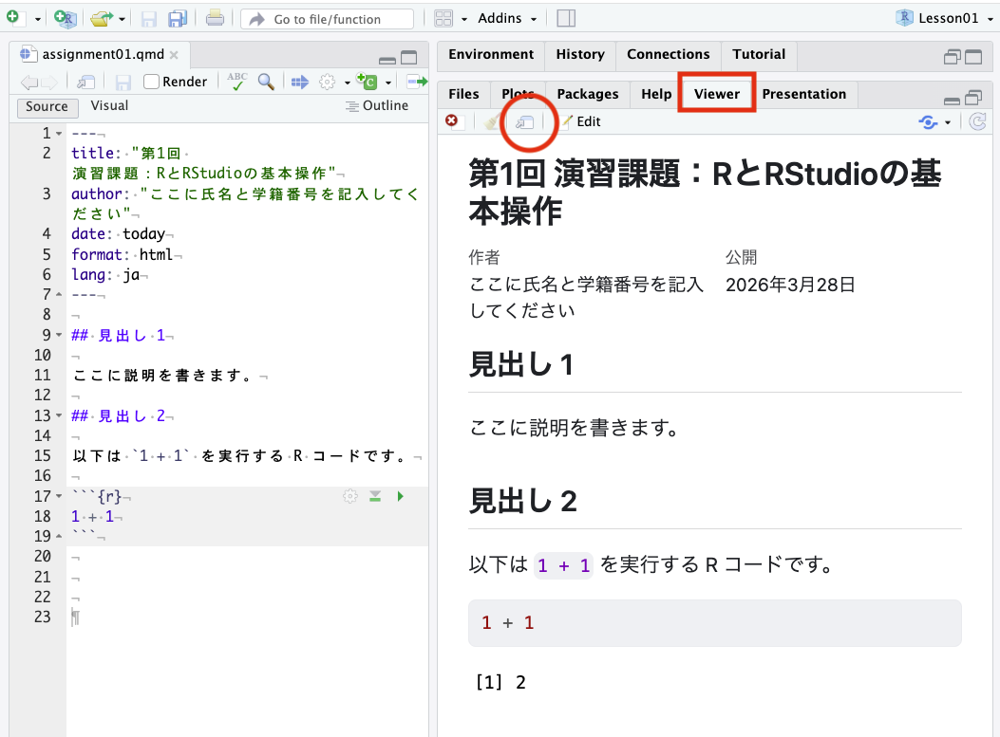
1.13 毎時間の準備と進め方
授業が始まったら以下の手順で準備してください。
| 1. | 画面左下のウィンドウズマークを押してRStudioを起動する。 |
| 2. | RStudio 左上のアイコン（＋R）をクリックし、新規 R プロジェクトを作成する。 |
| 3. | New Directory を選択する。（これにより、新しくフォルダが作成される。） |
| 4. | R New Project を選択する。 |
| 5. | Directory name に「LessonXX」と入力、Browse ボタンから、Kドライブに作成した「R_programming」を選択し、Create Project をクリックする。 |
| 6. | RStudio で、右上のプロジェクト名が LessonXX に変更されていることを確認する。 |
| 7. | R_programming フォルダの中に、LessonXX というフォルダ（ディレクトリ）が新しく作成されていることを確認する。 |
| 8. | RStudio 左上のプラス（＋）マークから、R Scriptを選択し、新規 R Script を作成する。 |
| 9. | R Script を practiceXX という名前で保存する。 |
| 10. | Blackboard から本授業で使うデータと「assignmentXX.qmd」ファイルをダウンロードし、先ほど作成した「R_programming/LessonXX」フォルダに格納する。 |
| 11. | RStudio 右下のペインにある Files からそのファイルをクリックして開く。 |
| 12. | 演習と課題に取り組む。課題ファイルの中には、```{r} で始まるグレーの枠（R コード・チャンク）がある。ここに R コードを記入し、前後に必要な説明も記入する。 |
| 13. | すべての問題が解けたら、画面上部にある [Render] をクリックして assignmentXX.html を作成する。 |
| 14. | 作成されたhtmlファイルをブラウザで開き、自分の名前や計算結果が正しく表示されているか確認する。 |
| 15. | htmlファイルはBlackboardにアップロードできないので、作成したhtmlファイルを「ZIP形式」に圧縮する。htmlファイルを右クリックして「圧縮（ZIP形式）」をクリックする。 |
| 16. | 最後に、assignmentXX.html.zip を Blackboard の所定の場所にアップロードする。 |
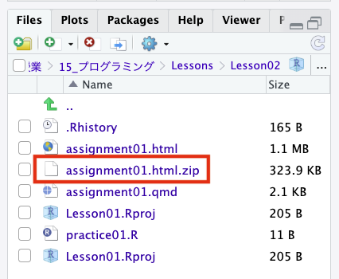
プログラムが書かれた .qmd ファイルではなく、Renderボタンを押して新しく作成された .html ファイルでもなく、htmlファイルを圧縮した .zip ファイルを提出してください。
コードに間違い（打ち間違いやカッコの閉じ忘れ）があると、Renderが途中で止まり、HTMLが作成されません。エラーメッセージを読み、該当する行を修正してから、もう一度 [Render] を押してください。
1.14 本日の課題
assignment01 に取り組み、assignment01.html を Blackboard から提出してください。
- Blackboardから 「assignment01.qmd」をダウンロードする。
- 「assignment01.qmd」を「R_programming/Lesson01」に格納する。
- RStudio の右下にある Files から、 assignment01.qmd をクリックして開く。
- 本日の演習課題に取り組む。
- 終わったら Render を押し、HTML ファイルを作成する。
- 「assignment01.html」をBlackboard から提出して終了する。